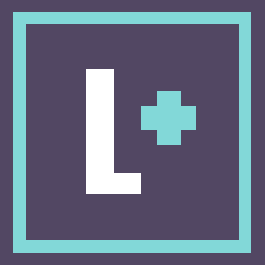
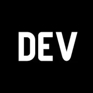
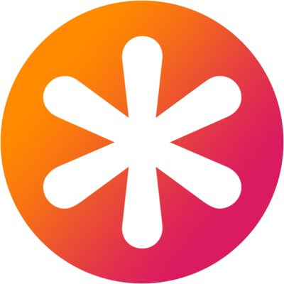

Безкоштовна онлайн-платформа для навчання програмуванню, веб-розробці та багатьом іншим технологіям. FreeCodeCamp пропонує навчальні ресурси, включаючи інтерактивні вправи, проекти та відеоуроки, що допоможуть вам освоїти різні аспекти програмування.

YouTube-канал, який пропонує відеоуроки з різних технологій, фреймворків та інструментів веб-розробки. Канал LevelUpTuts пропонує відеоуроки з розробки проектів та практичних прикладів коду. Ви зможете дізнатися, як створити реальні веб-додатки та використовувати різні технології.
Цей YouTube-канал, ведений Бредом Траверсі, пропонує відеоуроки з різних технологій програмування, веб-розробки та фреймворків. Канал Traversy Media пропонує широкий спектр відеоуроків, охоплюючи теми, такі як HTML, CSS, JavaScript, PHP, Python, Node.js, React, Vue.js та інші. Ви зможете знайти відеоуроки як для початківців, так і для більш досвідчених розробників.

Це платформа для програмістів, де можна знайти безліч цікавих статей, думок, практичних порад та спільноту розробників для обміну досвідом. Dev.to має активну спільноту розробників, де ви можете обговорювати теми, задавати питання, ділитися своїми думками та отримувати фідбек від інших розробників. Це прекрасний спосіб знайти нових колег, розширити свої знання та побудувати професійні зв'язки.
Веб-сайт, що спеціалізується на CSS (Cascading Style Sheets), від основ до складних технік. Ви знайдете тут багато корисних статей, посібників та прикладів коду, пов'язаних з веб-дизайном і розробкою. Він допоможе вам поліпшити ваші навички в створенні стильного та привабливого веб-інтерфейсу.
